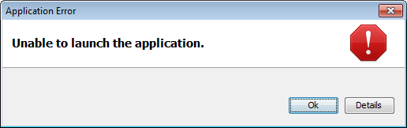

Installing EzLog4JOnce Java has been installed on your computer, EzLog4J was made to run from a simple click. If your operating system complains when you click on the dist/ezlog3.jar file, then Microsoft Windows can click-on the provided ezlog.bat batch-file from within The Microsoft Windows File Manager. In a like manner, Linux users can click to try the virtues of the included ezlog.sh file. Yet, bad things can *still* sometimes happen to good people... Especially on Microsoft Windows. Hence, if you see errors such as: "" Not to worry. All is still well! --Some folks might need to (3) right-click on the ezlog3.jar, then select the "Run with Java" (sic) option from their file manager. Others might need (2) administrator rights to run ezlog3.jar for the first time. Still others might like to (1) use "java -jar ezlog3.jar" to start the program from where ezlog was installed in a command-line / DOS / terminal session. After trying all of the above, if you still have trouble then feel free to contact me if you need help. |
||||||
About EzLog4JEzLog4J is a graphical interface for managing notes via liberated log files. Written in 100% pure Java, EzLog4J has been designed to run anywhere Java is installed. The EzLog4J Software works great on Windows, Mac OS X, Linux, and elsewhere. From a personal point of view, EzLog4J Software makes a fine journal or categorized micro-blogger; EzLog allows us to keep track of all of those ad-hoc insights, ideas, & inspirations. -Details that can add up to help make any day, an inspired one! From a professional point of view, by allowing us to quickly categorize and note our project-related activities, EzLog4J can help us diagnose complex problems, as well as assist us in creating better status reports. Finally, EzLog is also free software. Because EzLog4J is free, we can share it with our friends, relatives, co-workers, and chance encounters until our hearts are content!
Getting ...All you need to do to use EzLog4J is to:
Tutorial ...A video is worth 10,000 pictures: While outdated, we have a video for Ezlog (Version 1). You can click here to watch the video on YouTube.com.
- R.A. Nagy p.s. - While EzLog4J is incredibly useful as-is, we are still adding features. Feel free to contact me if you have any suggestions for improvement. |
||||||
Versions & Releases of EzLog4J
|